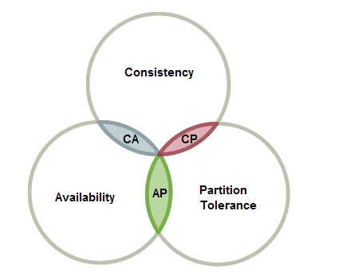

分布式系统
核心6问
团队愿景（集群是用来干嘛的）
团队结构（集群由哪些节点组成）
团队沟通（节点之间怎么通信）
团队运作（一个工作job分配下来是怎样运作的）
公共资源分配（共享资源如何处理）
队员冲突处理（容错机制）
基本概念
什么是分布式系统
以一定结构规则可以相互连接的好多节点（服务器）
副本（replica/copy）
指在分布式系统中为数据或服务提供的冗余。
-
数据副本
指在不同的节点上持久化同一份数据，当出现某一个节点的存储的数据丢失时，可以从副本上读到数据。数据副本是分布式系统解决数据丢失异常的唯一手段。
如 备份的数据库，GFS里面的chuck 都是数据副本 -
服务副本
指数个节点提供某种相同的服务，这种服务一般并不依赖于节点的本地存储，其所需数据一般来自其他节点。 MapReduce里面 WorkNode， 分布式Tensorflow 里的多个Work node /device 都是服务副本
副本控制协议
指按特定的协议流程控制副本数据的读写行为，使得副本满足一定的可用性和一致性要求的分布式协议。
CAP 理论

CAP 理论是由 Eric Brewer 提出的分布式系统中最为重要的理论之一。
CAP 理论的定义很简单，CAP 三个字母分别代表了分布式系统中三个相互矛盾的属性
Consistency (一致性)：CAP 理论中的副本一致性特指强一致性（1.3.4 ）；
Availiablity(可用性)：指系统在出现异常时已经可以提供服务；
Partition tolerance（分区容错）
1. 分布式系统分类
1.1 分布式操作系统 DOS
1.2 分布式网络系统 NOS
1.3 分布式中间件 NOS
2. 分布式系统架构
副本控制协议主要分为两大类：“中心化(centralized)副本控制协议”和“去中心化(decentralized)副本控制协议”。
所以 分布式系统架构主要有"中心化"和“去中心化”两类
中心化系统架构
去中心化系统架构
• 在这种架构下，集群中的领导是动态选择出来的，而不是人为预先指定的，而且在集群发生故障的情况下，集群的成员会自发举行会议选举新的领导。典型案例如：zookeeper、以及Go语言实现的Etcd。
3. 分布式系统--容错技术
错误的类型
1. 暂时性错误
2. 间歇性
3. 永久性
预防错误的冗余设置
1. 硬件冗余
2. 软件冗余
3. 信息冗余
4. 时间冗余
故障的基本处理方案：
1. 主动复制 将所有的复制模块协同进行，
2. 被动复制 只有一个模块处于被动状态，其他模块的交互状态由这一模块的检查点定期检查
3. 半主动复制
被动复制中的节点故障处理
| No. | | | |
| --- | -------------------------------------------------- | ----------------------------------- | ------------------------ |
| 1 | 向后式恢复 恢复到上一个正常状态的checkpoint 检查点 | 适用于 系统故障无法预知和去掉的情况 | 代价低，常用 |
| 2 | 向前式恢复 | 假定故障是已知的 或可以获得的， | 将这些故障去掉，继续运行 |
4. 分布式系统--通信技术
同一节点内
Unix 提供了信号、管道、命名管道、消息列队、共享内存等通讯机制
消息列队
消息的链表
共享内存
多个进程共享一个指定的存储区
不同节点内
提供了网络套接字等
1. socket通信
2. PVM/MPI通信
3. 中间件模式的通信
a. rpc
基于web服务的通信
5. 分布式系统--进程线程管理
6. 分布式系统--同步机制
资源分为：
1. 各进程可以同时访问 2. 不允许多个进程访问的-->需要同步机制进行控制管理
同步机制的评价
1. 响应时间和吞吐量 2. 恢复能力 3. 开销 4. 公平性 5. 可拓展性 6. 连接方式 7. 初始化 8. 排序方法
互斥问题
互斥问题 ：定义一些基本的操作来解决共享资源的多个并发过程的冲突问题
主要目标：保证在任意时刻，只有一个进程对限制性资源的访问
互斥算法需要满足的三个条件：
1 . 依据获得资源进程必须先释放后，另一个进程才能获得
2. 不同请求应该该相应顺序得到满足。该顺序规则应该，提前规定，如安装逻辑时钟的要求
3. 若获得资源的每个进程都最终释放资源，则每个请求最终得到满足
7. 分布式系统--独一性命名
大规模分布式并行处理系统是由许多松耦合的处理单元组成的，要注意的是，这里指的是处理单元而非处理器。每个单元内的CPU都有自己私有的资源，如总线、内存、硬盘等。这种结构最大的特点在于不共享资源。在不共享资源（Share Nothing）的分布式架构下，节点可以实现无限扩展，即计算能力和存储的扩展性可以成倍增长。
分布式 操作系统
| System | Description | Main Goal |
|---|---|---|
| DOS | Tightly-coupled operating system for multiprocessors and homogeneous multicomputers | Hide and manage hardware resources 隐藏和管理硬件资源 |
| 高度耦合操作系统 | ||
| NOS | Loosely-coupled operating system for heterogeneous multicomputers (LAN and WAN) | Offer local services to remote clients |
| 网络操作系统 | 将当地服务发布到远程 | |
| Middleware | 位于平台（OS+硬件）与应用之间的通用服务 | ·Provide distribution transparenc提供分布式传输 |
| 中间件 |
分布式中间件
没有一个比较清晰的定义，一般指位于平台（OS+硬件）与应用之间的通用服务。
基于目的和实现机制的不同，将平台分为以下几类
|1. 远程过程调用（rpc）
|2. 面向消息的中间件（Message-Oriented Middleware）
|
|3. 事务处理监控（transaction process monitors）
|事务管理与协调，负载平衡、失败恢复